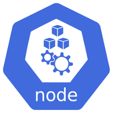

13. Kubernetes (k8s) cơ bản
/
Lab 2: Tạo NodePort Service
Mục tiêu
- Tạo Deployment + Service kiểu NodePort cho nginx.
- Truy cập ứng dụng từ ngoài cluster bằng
minikube service.
Kiến trúc tổng quan
flowchart LR
Browser["

Browser
http://127.0.0.1:64451"]
Node["

Minikube node
nodePort: 30099"]
SVC["Service
nginx-service
port:80 → targetPort:80"]
subgraph Pods["3 Pod nginx"]
P1["

Pod"]:::p
P2["
Pod"]:::p
P3["
Pod"]:::p
end
Browser --> Node --> SVC --> Pods
classDef p fill:#eef2ff,stroke:#8f0c9e,stroke-width:1px
Service NodePort mở cổng 30099 trên node. Với Minikube, dùng minikube service nginx-service --url để tạo tunnel từ localhost tới cổng đó.
Yêu cầu trước khi bắt đầu
- Hoàn thành Lab 1 (Minikube chạy).
- Source code:
sourcecode/section_13_kubernetes_k8s_basic/lab2_service_nodeport/.
Các bước thực hành
-
Bước 1: Tạo file cấu hình NodePort Service
Tạo file nginx-nodeport.yaml (Deployment + Service NodePort):
apiVersion: apps/v1
kind: Deployment
metadata:
name: nginx-deployment
spec:
replicas: 3
selector:
matchLabels:
app: nginx
template:
metadata:
labels:
app: nginx
spec:
containers:
- name: nginx
image: nginx:latest
ports:
- containerPort: 80
---
apiVersion: v1
kind: Service
metadata:
name: nginx-service
spec:
type: NodePort
selector:
app: nginx
ports:
- protocol: TCP
nodePort: 30099
port: 80
targetPort: 80
💡 Một file YAML có thể chứa nhiều resource, ngăn cách bằng dòng ---. Service có nodePort: 30099 (nằm trong range 30000–32767).
-
Bước 2: Apply và kiểm tra
kubectl apply -f nginx-nodeport.yaml
kubectl get service
kubectl get service nginx-service -o wide
kubectl get deployment
kubectl get pods -o wide
Quan sát cột PORT(S) của Service: 80:30099/TCP.
-
Bước 3: Truy cập dịch vụ
Lấy IP của Minikube (chỉ có tác dụng trong mạng nội bộ của Kubernetes, không truy cập được từ bên ngoài):
minikube ip
Tạo tunnel để truy cập từ ngoài và lấy URL:
minikube service nginx-service --url
http://127.0.0.1:64451
Copy URL dán vào trình duyệt (hoặc dùng curl) – bạn sẽ thấy trang chào mừng của nginx.
-
Bước 4: Xoá resource
kubectl delete -f nginx-nodeport.yaml
Kiểm tra kết quả
✅ Lab thành công khi
kubectl get service nginx-service hiển thị TYPE = NodePort và PORT(S) = 80:30099/TCP.- Mở URL từ
minikube service nginx-service --url thấy trang nginx.
Troubleshoot
Không mở được http://127.0.0.1:<port>
Nguyên nhân: tunnel chưa được tạo hoặc đã tắt terminal.
Giải pháp: chạy lại minikube service nginx-service --url (terminal phải giữ mở khi dùng minikube tunnel).
Service hiển thị <none> ở cột PORT
Nguyên nhân: sai selector, Service không tìm thấy Pod.
Giải pháp: kiểm tra selector.app khớp với template.metadata.labels.app của Deployment.